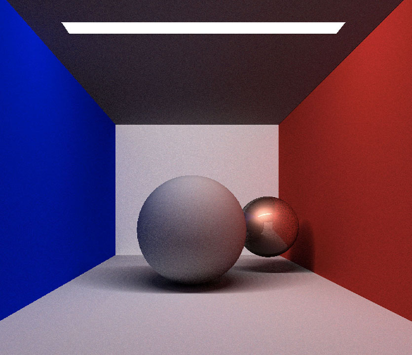
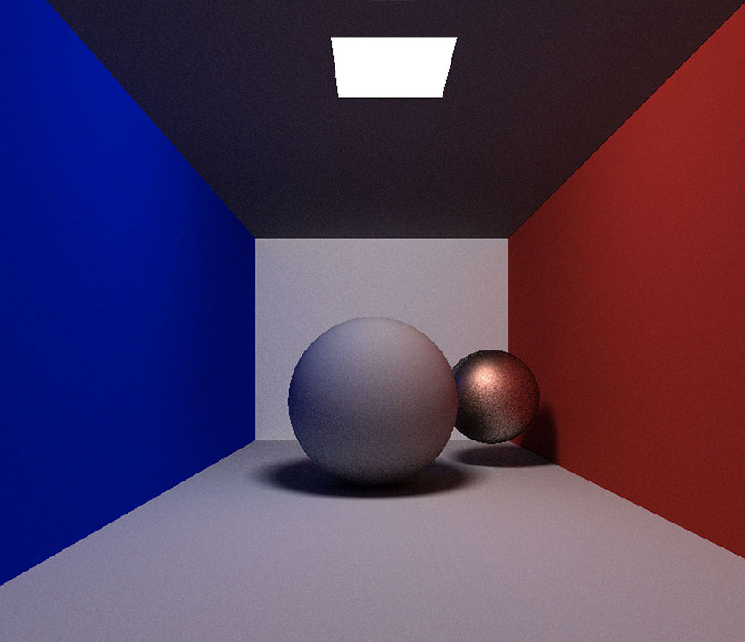
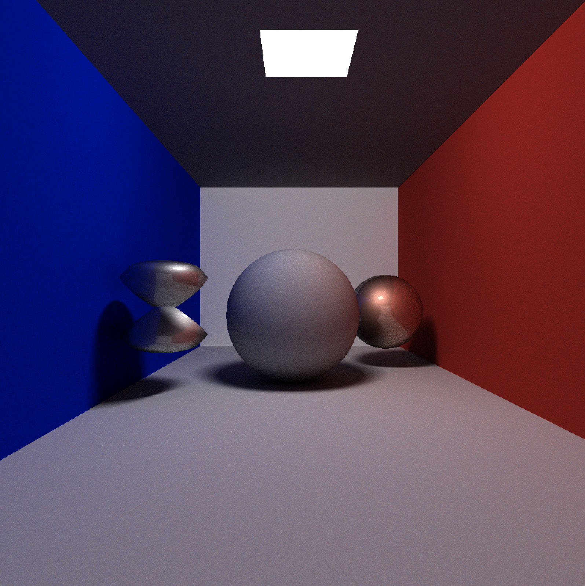

![ [a] result of rendering](images/fulls/PT.jpg){kind=link}
![ [b] Blinn permutation formula on the small sphere](images/fulls/PT3.jpg){kind=link}
![ [c] hourglass](images/fulls/PT4.jpg){kind=link}
One of my projects for University is a stochastic Ray Tracing in C++ to render a simple scene of a Cornell Box with two balls inside. This project was coordinated by prof. Massimo Picardello.
This code gives the possibility to choose which shape you want to insert and what material you want assign to it. I implemented Cook-Torrance's BRDF to rappresent glossy materials and Lambert's BRDF to diffuse materials. To calculate global illumination, I separeted the contributions of direct and indirect illumination, following the book "Advanced Global Illumination" by Dutrè.
Direct illumination is calculated by using a simple ray tracing that, for each ray shooted from camera,
determines the hitting point on scene. On this point is calculated the color (using the BRDF of the corrisponding object)
and is traced a shodow ray, that connect the point with a random point on the light (determinated by uniform sampling) .
The calculation of Indirect Illumination is done by iterating the procedure. The contributions is obtained using
the MonteCarlo estimator with cosine-weighted hemisphere sampling.
The recursion is stopped by using Roussian Roulette's algotithm or with a defined number of steps.
I added the possibility to activate Blinn perturbation formula, to make irregular the surface of an object (as you can see in [b] image). Another feature is the chance to insert an hourglass. This 3D object is obtained by altering the equation of a sphere. In this case, I used
r/10+9r/10*cos(theta)
where r is the radius of the sphere and theta is the angle included by the radius and the upward versor. Note that this equation is never 0.(Result in [c] image).
IMPROVEMENTS
In this version, the intersection is calculated by using the parametric equation of objects, so I want to implement the triangulation of the meshes. The next step is to add glass objects and implement algotithms for render caustics.